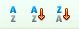
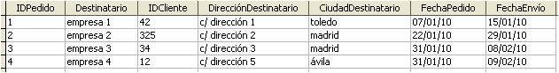
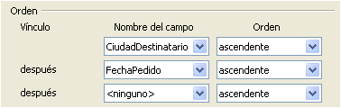

Tecnología de la Información y la Comunicación: Bases de datos
3.4. Operaciones con registros
Cuando una tabla contiene un número de registros fácilmente manejable (todos los registros se pueden visualizar en una o dos pantallas), consultar un dato u ordenar la tabla es una tarea asequible.
Sin embargo, la mayoría de las tablas tienen una extensión mucho mayor por lo que es necesario disponer de herramientas de tratamiento de registros para navegar, ordenar y filtrar por campos.
Barra de navegación
Esta barra aparece en la parte inferior de la pantalla de edición de datos y ofrece la información sobre el registro activo y las herramientas para situarse en los distintos registros.
Barra de navegación de registros
Reflexiona
Los botones ir al siguiente o al anterior e ir al primero o al último ya los has usado en OOo Calc para moverte entre las distintas hojas de cálculo.
El botón con un asterisco tiene una función concreta, ¿cuál es?.
Importante
Ordenar los registros de una tabla consiste en alterar el orden de inserción de éstos para mostrarlos en pantalla ordenados por el campo o campos seleccionados ascendente o descendentemente.
Ordenación de registros
Esta operación no altera los datos del resto de campos o columnas, sólo afecta a la visualización de las filas en la pantalla.
La barra de ordenación de registro ofrece tres posibilidades:
|

Ordenar registros
|
Caso práctico
Introduce los siguientes registros en la tabla Pedidos que has creado anteriormente para Publi-Servi y ordénalos de tres formas distintas:
- Según el campo CiudadDestinatario, por orden ascendente.
- Según el campo FechaEnvío, por orden descendente.
- Combinando ambas opciones: primero por ciudad y después por fecha de envío, por orden ascendente en ambos casos.

Tabla Pedidos
Para saber más
¿Cuál es el número máximo de campos por los que se puede ordenar una tabla?
La respuesta está en el menú: la ordenación de registros admite hasta tres campos.

Orden de registros
Imagen de elaboración propia
Importante
Filtrar los registros de una tabla consiste en mostrar solamente aquellos registros que cumplen unas condiciones previamente establecidas.
Filtrado de registros
El filtrado de registros tampoco afecta a la estructura ni al contenido de la tabla, simplemente es una consulta rápida en pantalla.
La barra de filtrado permite cuatro opciones:
|
Filtrar registros |
Caso práctico
Ahora vamos a practicar el filtrado. Aplica los siguientes filtros a la tabla Pedidos:
- Coloca el cursor en el registro cuya ciudad es 'madrid' y aplica un autofiltro.
- Desactiva el filtro y vuelve a la vista inicial.
- Aplica un filtro al campo 'fecha de pedido' para averiguar los pedidos que se realizaron después del 22/01/10.